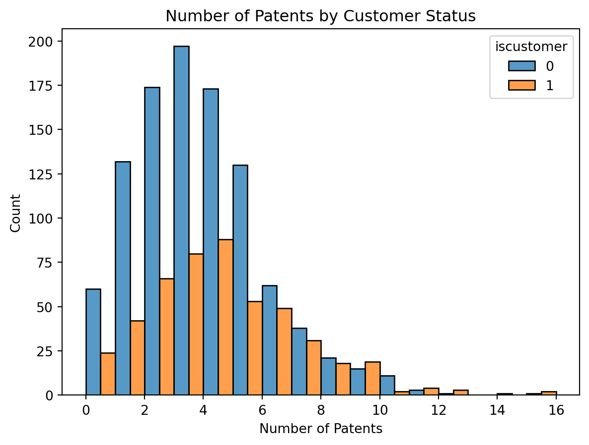
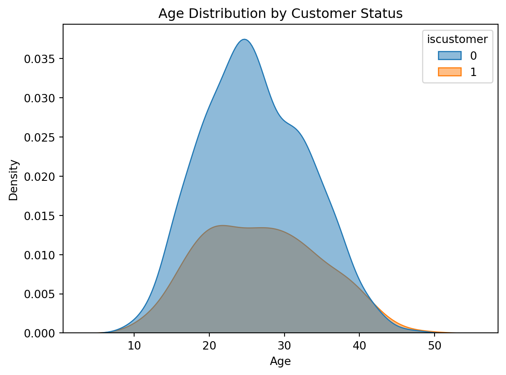
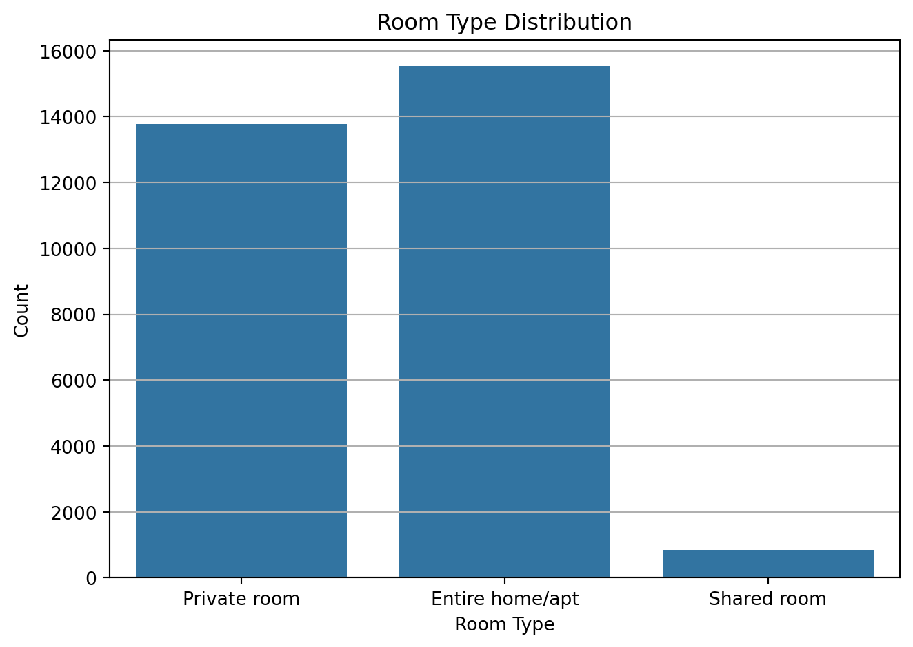
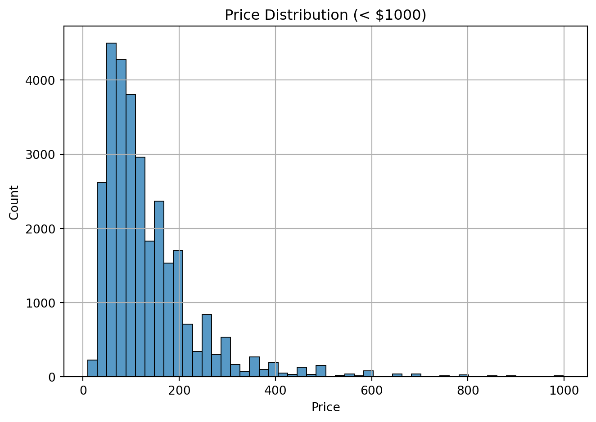
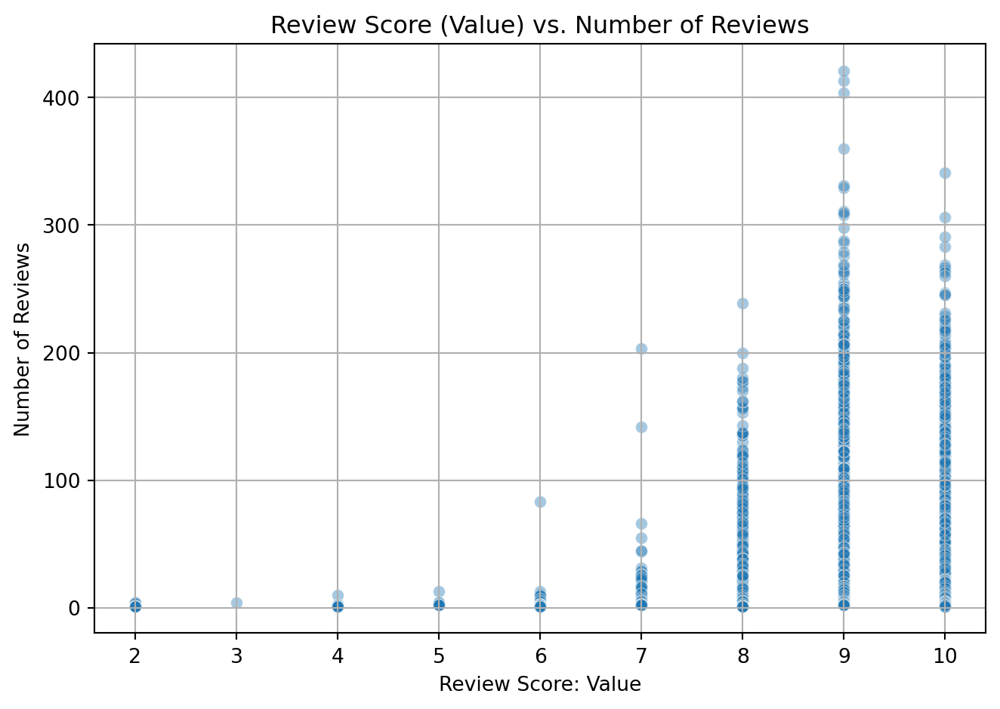

Blueprinty is a small firm that makes software for developing blueprints specifically for submitting patent applications to the US patent office. Their marketing team would like to make the claim that patent applicants using Blueprinty’s software are more successful in getting their patent applications approved. Ideal data to study such an effect might include the success rate of patent applications before using Blueprinty’s software and after using it. Unfortunately, such data is not available.
However, Blueprinty has collected data on 1,500 mature (non-startup) engineering firms. The data include each firm’s number of patents awarded over the last 5 years, regional location, age since incorporation, and whether or not the firm uses Blueprinty’s software. The marketing team would like to use this data to make the claim that firms using Blueprinty’s software are more successful in getting their patent applications approved.
We aim to use Poisson regression to analyze whether Blueprinty customers tend to receive more patents, after controlling for other factors.
Data
import pandas as pdimport numpy as npimport matplotlib.pyplot as pltimport seaborn as snsblueprinty = pd.read_csv("blueprinty.csv")# Histogram by customer statussns.histplot(data=blueprinty, x="patents", hue="iscustomer", multiple="dodge", binwidth=1)plt.title("Number of Patents by Customer Status")plt.xlabel("Number of Patents")plt.ylabel("Count")plt.show()# Age distributionsns.kdeplot(data=blueprinty, x="age", hue="iscustomer", fill=True, alpha=0.5)plt.title("Age Distribution by Customer Status")plt.xlabel("Age")plt.show()# Region countsprint(pd.crosstab(blueprinty["region"], blueprinty["iscustomer"]))


iscustomer 0 1
region
Midwest 187 37
Northeast 273 328
Northwest 158 29
South 156 35
Southwest 245 52
Observations by Customer Status
Based on the plots and summary table, we observe several patterns: Patent Counts: Blueprinty customers tend to have slightly higher patent counts than non-customers. Both groups are right-skewed, but the customer group shows a longer tail, suggesting a few firms have notably more patents. Age Distribution: Customers are, on average, slightly older than non-customers. The age distribution for customers is flatter and shifted to the right, indicating broader age representation, while non-customers are more concentrated around their mid-to-late 20s.
Regional Representation: The Northeast region has the largest number of customers (328), even more than non-customers (273), showing a strong customer base there. Regions like Midwest, Southwest, Northwest, and South have significantly more non-customers than customers. These patterns confirm that age and region are not balanced across groups and should be included as control variables in the Poisson regression.
Simple Poisson MLE
from scipy.stats import poissonfrom scipy.optimize import minimizeY_obs = blueprinty["patents"]def poisson_loglikelihood(lam, Y):return-np.sum(poisson.logpmf(Y, lam))lambdas = np.linspace(0.1, 10, 100)ll_vals = [-poisson_loglikelihood(lam, Y_obs) for lam in lambdas]plt.plot(lambdas, ll_vals)plt.xlabel("lambda")plt.ylabel("Log-Likelihood")plt.title("Log-Likelihood for Poisson Model")plt.show()# MLE estimateprint("Sample mean:", Y_obs.mean())res = minimize(poisson_loglikelihood, x0=[1], args=(Y_obs,))print("MLE lambda:", res.x[0])
The figure above displays the log-likelihood curve of a Poisson model using the observed number of patents across firms. We vary \(\lambda\) across a range of values and compute the corresponding log-likelihood. The log-likelihood reaches its maximum at λ = 3.6847, which matches the sample mean of the observed data. This result is expected: for a Poisson distribution, the maximum likelihood estimate (MLE) of λ is equal to the sample mean. The curve shows a clear peak, verifying that the likelihood function is concave in this setting, and that our optimizer is finding the global maximum. This serves as a useful sanity check before moving on to the regression version of the model.
Poisson Regression
import patsyimport statsmodels.api as smblueprinty["age2"] = blueprinty["age"] **2y, X = patsy.dmatrices("patents ~ age + age2 + C(region) + iscustomer", data=blueprinty, return_type="dataframe")model = sm.GLM(y, X, family=sm.families.Poisson())results = model.fit()print(results.summary())
The Poisson regression output allows us to assess how different factors are associated with the number of patents a firm received over the past five years. Key insights include:
Intercept: The baseline log-patent count for a firm in the omitted region (likely Midwest), with age = 0 and is not a customer, is approximately -0.51. This is not substantively interpretable but serves as a reference level.
Age and Age²:
The coefficient for age is positive and highly significant (0.1486, p < 0.001), meaning older firms tend to have more patents.
The coefficient for age² is negative and highly significant (-0.003, p < 0.001), indicating a concave relationship — patent counts increase with age but at a decreasing rate.
Region:
None of the regional dummy variables are statistically significant (p > 0.1), suggesting no strong evidence that patent counts differ systematically by region (after accounting for age and customer status).
The omitted base region is likely the one not listed (e.g., “Midwest”).
Customer Status:
The coefficient for iscustomer is positive (0.208) and highly significant (p < 0.001), indicating that — controlling for age and region — Blueprinty customers tend to receive significantly more patents.
Interpreting in real units: Since coefficients in Poisson models are in log-space, the effect size is: \(\exp(0.208) \approx 1.23\), meaning customers are expected to receive about 23% more patents than non-customers, all else equal.
Model Fit:
The pseudo R² is 0.136, which is modest but acceptable in count data models.
The model converged in 5 iterations with a strong Pearson chi² statistic, indicating reasonable model fit.
Average increase in predicted patents for customers: 0.79
To better interpret the coefficient on iscustomer, we simulate predicted outcomes using two hypothetical datasets:
X0 is identical to the original covariate matrix but assumes none of the firms are Blueprinty customers (iscustomer = 0 for all).
X1 is the same matrix but assumes all firms are customers (iscustomer = 1 for all).
We use the fitted Poisson regression model to predict the number of patents for each firm under both scenarios. Then, we compute the average difference:
The average predicted increase in patent count due to being a Blueprinty customer is 0.79.
This means that, holding firm age and region constant, Blueprinty software is associated with almost one additional patent per firm over 5 years, on average.
This result supports the company’s marketing claim that their software may improve patent success outcomes.
Airbnb Case Study
Introduction
Airbnb is a platform for booking short-term rentals. This dataset contains 40,000 listings in NYC scraped in 2017. We examine the number of reviews (as a proxy for bookings) as a function of host and listing characteristics.
Data
airbnb = pd.read_csv("airbnb.csv")airbnb_clean = airbnb[["number_of_reviews", "days", "room_type", "bathrooms", "bedrooms", "price","review_scores_cleanliness", "review_scores_location", "review_scores_value", "instant_bookable"]].dropna()airbnb_clean["instant_bookable"] = airbnb_clean["instant_bookable"].map({"t": 1, "f": 0})y_airbnb, X_airbnb = patsy.dmatrices("number_of_reviews ~ days + C(room_type) + bathrooms + bedrooms + price + review_scores_cleanliness + review_scores_location + review_scores_value + instant_bookable", data=airbnb_clean, return_type="dataframe")# 可视化 1：房型分布sns.countplot(data=airbnb_clean, x="room_type")plt.title("Room Type Distribution")plt.xlabel("Room Type")plt.ylabel("Count")plt.grid(axis='y')plt.tight_layout()plt.show()# 可视化 2：价格分布（去掉极端高价后更清晰）sns.histplot(data=airbnb_clean[airbnb_clean["price"] <1000], x="price", bins=50)plt.title("Price Distribution (< $1000)")plt.xlabel("Price")plt.ylabel("Count")plt.grid(True)plt.tight_layout()plt.show()# 可视化 3：评分 vs 评价数（作为预订代理）sns.scatterplot(data=airbnb_clean, x="review_scores_value", y="number_of_reviews", alpha=0.4)plt.title("Review Score (Value) vs. Number of Reviews")plt.xlabel("Review Score: Value")plt.ylabel("Number of Reviews")plt.grid(True)plt.tight_layout()plt.show()



Based on the plots above, we observe the following patterns:
Room Type Distribution: Entire homes/apartments are the most common room type, followed closely by private rooms. Shared rooms are rare. This suggests most listings are meant for exclusive use, possibly catering to tourists or families.
Price Distribution (< $1000): Prices are right-skewed — most listings fall between $50 and $300 per night, with a long tail extending beyond $1000. We limit the histogram to listings under $1000 to better visualize the distribution of typical prices.
Review Score vs. Review Count: Listings with higher value scores (mostly 9 or 10) tend to receive more reviews. This indicates a positive relationship between guest-perceived value and listing popularity (or booking frequency).
These insights help us understand the heterogeneity in listing types, pricing, and guest feedback — all useful when constructing a predictive model for bookings.
We interpret the coefficients from the Poisson model as log-rate effects on the expected number of reviews, holding all other variables constant. Key insights include:
Room Type:
Compared to the baseline (Entire home/apt), Private room has a small but significantly lower expected review count (coef = –0.0105).
Shared room shows a larger negative effect (coef = –0.2463), indicating these listings receive far fewer reviews.
Days on Platform: The coefficient for days is positive and highly significant. Each additional day the listing is active increases the log-expected review count slightly, consistent with older listings accumulating more reviews.
Bathrooms: Negative coefficient (–0.1177) suggests listings with more bathrooms get fewer reviews, possibly due to being larger and more expensive — or reflecting multibathroom listings in less popular areas.
Bedrooms: Positive and significant. Listings with more bedrooms receive more reviews, indicating higher occupancy capacity is attractive to renters.
Price: A higher price slightly decreases the expected review count. Though the effect is small (–1.79e–5), it’s statistically significant, aligning with intuition that higher prices may reduce booking frequency.
Review Scores:
Cleanliness has a strong positive association with reviews — cleaner listings tend to get booked and reviewed more.
Location and Value scores are negatively associated with review count, which may seem counterintuitive. One possible reason is that extremely popular listings (with many reviews) may face greater scrutiny, leading to slightly harsher location/value ratings.
Instant Bookable: The largest positive effect (coef = 0.3459). Listings with instant booking enabled receive far more reviews on average, likely because they remove friction for renters and appear more convenient in search results.
Conclusion
This project demonstrates how Poisson regression can be used to model count data—in this case, the number of patent awards or Airbnb reviews—as a function of meaningful covariates.
In the Blueprinty case, we find that firms using Blueprinty’s software are predicted to receive approximately 0.79 more patents on average than comparable non-customers, holding age and region constant. This provides modest evidence in support of the software’s effectiveness.
In the Airbnb case, we use the number of reviews as a proxy for bookings. Our Poisson regression model reveals that:
Listings with instant booking enabled receive significantly more reviews.
Lower prices, higher cleanliness ratings, and more bedrooms are associated with increased review counts.
Shared rooms tend to have far fewer reviews compared to full homes.
Together, these results show that Poisson regression provides a useful and interpretable framework for understanding count-based outcomes in both industrial and consumer-facing domains.